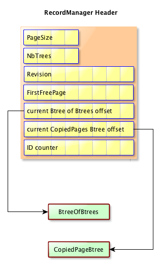
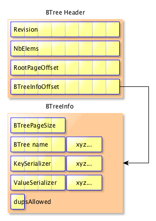
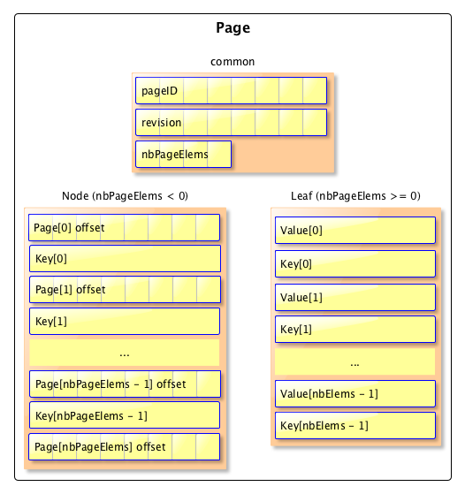
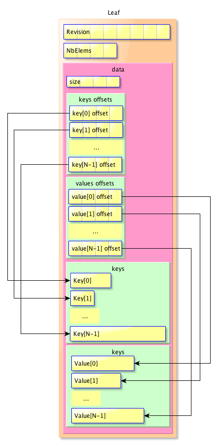

Mavibot 1.0
Downloads
Getting Started
Documentation
Support
Community
About Apache
7.2 - Physical storage
When associated with a RecordManager, Mavibot stores all the Btrees in one single file, which is split in many physical pages, all having the same size.
Note Currently, the choice was to use same size for all the pages, regardless of the data stored into them. The rationnal is to get close to the OS page size (frequently 512 bytes or 4096 bytes). This is not necessarily the best choice though, let’s say it’s something we might want to change later.
General file structure
The data is stored in a pure binary file. All btrees are stored in this single file.
This file is considered as a FileSystem, with fixed size ‘pages’ (a page is an array of bytes). The page size is fixed when the RecordManager is created. The data represented in a logical page may spread across many physical pages.
PageIO
A PageIO represents a physical block of the database file and contains complete or a part of the logical page’s data. PageIOs of a logical page are linked together.
Each PageIO has an eight byte pointer at the beginning, pointing to the next PageIO (or to nothing, if it is the last PageIO in the chain), plus an extra 4 bytes on the first PageIO to define the number of bytes stored in the chain of PageIO. Here is the mapping between a logical page and some PageIOs :
All PageIOs are contiguous on disk, but the PageIOs used to store a logical page may be located anywhere on the disk, they don’t have to be continuous.
Here is the structure of a PageIO on disk :
- next page offset (8 bytes) : the offset of the next PageIO, or -1 if it is the last PageIO
- data size (4 bytes) : the size of the data stored, this is only set in the first PageIO of the chain of PageIOs used to store a logical page.
- data (N bytes) : a block of data, whose size will be min( PageSize - offset - data size, data size) for the first PageIO or min( PageSize - offset, data size) for any other PageIOs
Logical structure mapping on disk
We will now describe how each logical structure is serialized on disk.
RecordManager header
A few bytes at the beginning of the file are used to store some critical information about the RecordManager. Here is the list of stored information details :
- The PageIO size (in bytes)
- The number of managed B-Trees
- The offset of the first free page
- The offset of the current B-tree of B-trees
- The offset of the previous B-tree of B-trees, if an update operation was performed
- The offset of the current CopiedPages B-tree
- The offset of the previous CopiedPages B-tree, if an update operation was performed
Here is a picture that shows the header content in two different cases (when an update operation is not completed, and when it’s completed) :

Recordmanager tracks the free pages (a free page is a PageIO that is not in use, for instance when a key was deleted). This is done by linking each unused PageIO together and finally updating the references of fisrt and last free pages. When there are no free pages these pointers contain -1 as the offset value.
This header is stored in a PageIO, at the very beginning of the file.
The RecordManager structure
Each BTree has a header that contains many details about it, and points to a rootPage which is the current root (i.e., the root of the latest revision).
The special BTree called ‘btree of btrees’(a.k.a BoB) contains the names and revisions of each managed BTree. To load the managed btrees during startup, this BoB is read to find the latest revision of each BTree and the associated root page’s offset based on which the btree will be loaded.
The B-tree info
Each B-tree has some metadata that will never change after creation. Here is the list of the details stored :
- pageSize (4 bytes) : the number of elements we cans store in a Node or a Leaf. It’s not related in any way with the PageIO size.
- nameSize (4 bytes) : The BTree name size
- name (nameSize bytes) : the BTree name
- keySerializerSize (4 bytes) : The size of the java FQCN for the key serializer
- keySerializer (keySerializerSize bytes) : The java FQCN for the key serializer
- valueSerializerSize (4 bytes) : The size of the java FQCN for the value serializer
- valueSerializer (valueSerializerSize bytes): The java FQCN for the value serializer
- dupsAllowed (1 byte): tells if the BTree can have duplicated values.
Note that a B-tree info can be stored in one or many IOPages, depending on its size.
The BTree header
There will be one B-tree header per revision.
Each BTree has to maintain many details, such as :
- revision (8 bytes) : the current revision of the BTree. This value is updated after each modification in the BTree.
- nbElems (8 bytes) : the total number of elements we have in the BTree. This is updated after each modification.
- rootPage offset (8 bytes) : the position in the file where the rootPage is stored
- btreeInfo offset (8 bytes) : the position of the B-tree info page in the file
Here is a diagram which represents the B-tree header and the B-tree info data structures on disk :

Note that they can be stored on one or more IOPages, depending on the size.
The below picture shows the contents of the btree headers present in the database file when more than one btree is stored.
Note that each B-tree Header has one root page, even if it contains no data. In this picture, the root page is shown just after the BTree it is associated with, but after a few updates, the root page may be stored elsewhere on the disk.
The Nodes and Leaves
Nodes and Leaves are logical BTree pages which are stored in one or more PageIOs. They have slightly different data structures, as Nodes contain pointers to Leaves, and no data, while Leaves contain data, but both contain the keys. The number of keys present in a Node is higher than that of a Leaf by one.
On disk, a Node will have pointers to some other logical pages, those pointers will be offset of the first PageIO used to store the logical page it points to.
The below picture shows a Node and Leaf after serialized to disk :

Note that this is necessary to store the size of the serialized data in order to know how many PageIOs will be needed to store the logical page.
The rootPage can be either a Node or a Leaf.
Potential improvement
We can get better performance by serializing the data differently. Instead of storing keys and values as byte arrays prefixed by their length, we could store an array of keys and values’ offsets before the associated byte[]. Here is the resulting data structure, once serialized :

(The Node is not described, as it’s basically the same data structure, but with one extra value).
It does not need more space to serialize the data this way, as the offsets are ints, and in the previous version, those ints are used to store the length of the keys and values anyway.
The gain is that we can have access to a given key and value without having to read all the previous keys and values. Also we can now read a leaf or a node without having to deserialize all the keys and values they contain.